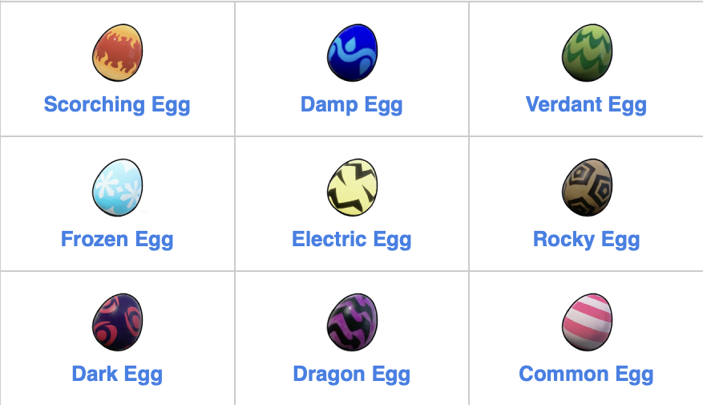

This is the map for the Chests and Eggs around the map. Chests are an easy source of resources early game or to unlock rare materials and schematics late game. Some might require a key. Eggs are the key to easily progress through the game. With an incubator you unlock many late game pals early on, without needing to wait until level 19 to unlock breeding.

These are all the different types of eggs, each corresponding to it's respective